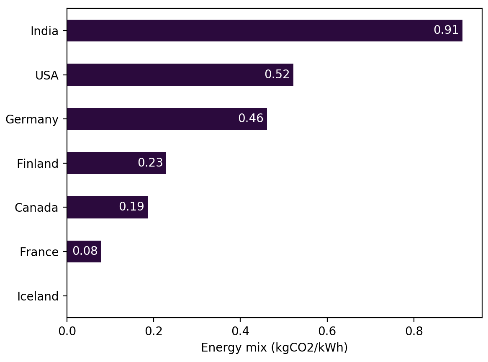

Selecting hardware¶
Every server or computer use electricity as its primary source of power. Electricity can be produced in a sustainable way leveraging the power of the sun or of wind. It can also be produced by burning coal of gases which, in the burning process, emits a lot of green house gases (CO2, CH4, …). Those GHGs are responsible for the climate change, we are and will be facing.
On this page, we provide the reader with some hardware levers to reduce its carbon footprint.
Server location¶
Every country uses different means to produce its energy. Some are cleaner than others. We found that energy mix can vary a lot between countries, for instance for every kWh produced in the USA, there is 0.5kg of CO2 emitted where as in Iceland, it’s nearly 0 ! Bellow is a comparison of energy mixes between a set of country 1 .
{kind=link}
As you can see, one way to grately reduce your carbon footprint is to select a region with a low carbon intensive energy mix.
GCP provides a way to select the best region according to your criterias : GCP region picker.
Power Usage Effectiveness¶
Computers and servers use energy to make computations but they also require energy to be cooled.
The Power Usage Effectiveness (PUE) is the ratio of energy used by the computing equipment in contrast to cooling and other overhead that supports the equipment. It can be defined as follows
As you can guess, the closer to 1 the ratio, the more effective is the equipment which also means it is less carbon intensive.
The PUE can vary a lot with infrastructures.
After some tests on my MacBook Pro, it seems to have a PUE around 1.2
The average PUE for a datacenter was 1.58 in 2020 2
Some datacenters achieve to get a PUE as low as 1, see OVH
GCP publishes the PUEs of its datacenters every trimester : gcp efficiency.
- 1
Data from ADEME’s Base Carbone
- 2
Uptime Institute survey Data center PUEs